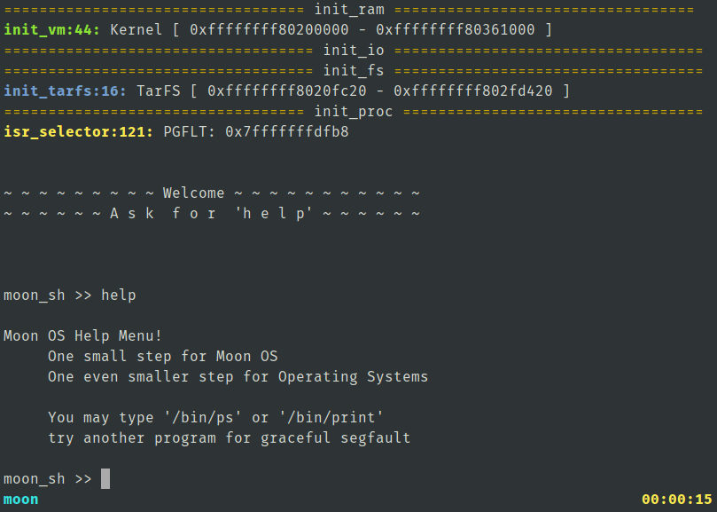

A fresh new operating system
From the ground up!
Using only the BSD Bootloader as a starting point, my partner and I began on the treacherous journey of OS development.
Features include:
- A basic shell running in userland ring-3
- Virtual Address spaces
- Context switching
- AHCI driver for hard drive
- TarFS driver for bootstrapping built in programs
- A VFS abstraction layer for future file systems
- Timer interrupts, Keyboard interrupts, Graceful pagefault handling